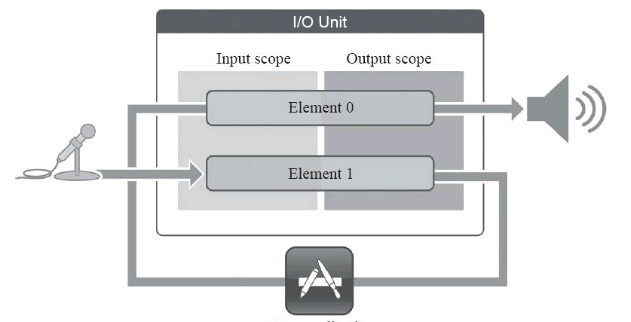

音视频开发
音视频基础
数字音频
将模拟信号转换为数字信号的过程
- 采样
在时间轴上对信号进行数字化。
根据奈奎斯特定理（也称为采样定理），按比声音最高频率高2倍以上的频率对声音进行采样（也称为AD转换）
比如：对高质量音频信号，其频率范围是20Hz~20kHz（人耳能够听到的频率范围），所以采样频率一般为44.1kHz，这样就可以保证采样声音达到20kHz也能被数字化，从而使得经过数字化处理之后，人耳听到的声音质量不会被降低
44.1kHz就是代表1秒会采样44100次
- 量化
在幅度轴上对信号进行数字化
- 编码
按照一定的格式记录采样和量化后的数字数据
音频格式有很多种，音频裸数据格式就是脉冲编码调制（PCM）数据。
描述一段PCM数据一般需要以下几个概念：
量化格式（sampleFormat）
采样率（sampleRate）
声道数（channel）
以CD音质为例：量化格式为16比特（2字节），采样率为44100，声道数为2，这些信息就描述
CD音质的比特率：即1秒时间内的比特数目，衡量音频数据单位时间内的容量大小
44100 * 16 * 2 = 1378.125kbps
那么1分钟内，这类CD音质的数据需要占据多大内存空间？
1378.125 * 60 / 8 / 1024 = 10.09M
如果sampleFormat更加精确（比如用4字节来描述一个采样）或者sampleRate更加密集（比如48kHz的采样率）那么所占的存储空间会更大，同时能够描述的声音细节会越精确
音频编码
通过计算CD音质的数据采样，每分钟需要存储10.1M，若要在网络中实时在线传播的话，数据量可能就太大了，需要进行压缩编码
压缩算法包括有损压缩和无损压缩，无损压缩是指解压后的数据可以完全恢复，有损压缩解压后的数据不能完全恢复，会丢失一部分信息，压缩比越小，丢失的信息就越多
压缩编码实际上是压缩掉冗余信号，冗余信号是指不能被人耳感知到的信号
常见压缩编码格式：
- WAV编码
在PCM数据格式前加上44字节，分辨用来描述PCM的采样率、声道数、数据格式等信息
特点：音质非常好，大量软件都支持其播放
适合场所：多媒体开发中的中间文件，保存音乐和音效素材
- MP3编码
具有不错的压缩比，听感上非常解决WAV文件
特点：音质在128kbps/s以上表现还不错，压缩比比较高，大量软件和硬件都支持，兼容性好
适合场所：搞比特率下对兼容性有要求的音乐欣赏
- AAC编码
目前比较热门的有损压缩编码技术，并衍生出了LC-AAC、HE-AAC、HE-AAC v2三种主要编码格式。
LC-AAC 是比较传统的AAC，主要应用于中高码率场景编码（>=80Kbit/s）
HE-AAC 主要应用于低码率场景的编码（<=80Kbit/s）
HE-AAC v2 主要应用于低码率场景的编码（<=48Kbit/s）
特点：在小于128Kbit/s的码率下表现优异，多用于视频中的音频编码
- Ogg编码
一种非常有潜力的编码，各种码率下都有比较优秀的表现，尤其在中低码率场景下。可以用更下的码率达到更好的音质，128Kbit/s的Ogg币192Kbit/s甚至更高码率的MP3还要出色，但目前还没有媒体服务软件的支持
特点：可以用比MP3更小的码率实现比MP3更好的音质，高中低码率下均有良好表现，兼容性不够好，流媒体特性不支持
适用场景：语音聊天的音频消息场景
视频编码
视频压缩也是通过去除冗余信息来进行压缩的
使用帧间编码技术可以去除时间上冗余信息
使用帧内编码技术可以去除空间上冗余信息
编码概念
MPEG 算法适用于动态视频的压缩算法，它除了对单幅图像进行编码外，还利用图像序列中的相关原则去除冗余，大大提高视频压缩比。
MPEG主要包括几个版本：Mpeg1（用于VCD）、Mpeg2（用于DVD）、Mpeg4 AVC（现在流媒体使用最多的就是它了）
相比较与ISO指定的MPEG的视频压缩标准，ITU-T制定的H.261、H.262、H.263、H.264一系列视频编码标准是一套单独的体系。其中H.264集中了以往标准的所有有点，采用简洁设计，使得它比Mpeg4更容易推广，现在使用最多的就是H.264标准
- I帧
帧内编码帧，
P帧
B帧
环境搭建
项目增加C++支持，OC语法支持混编，把引用C++的OC类后缀名改为.mm，就可以和C++一块编译了
LAME 一种MP3编码引擎，转码成MP3格式的音频文件时，最常用的就是LAME库
编译LAME，LAME 下载不下来，使用别人编译好的版本 lame 两个文件 lame.h 和 libmp3lame.a，拖进项目就可以了
AudioUnit
iOS 平台上所有的音频框架底层都是基于 AudioUnit 实现的
较高层次的音频框架包括：Mediia Player、AVFoundation、OpenAL、AudioToolbox，这些框架都封装了 AudioUnit，提供了更高层次的API（功能更少，职责更单一接口）

如果对音频需要更高成都的控制、性能以及灵活性，或者想要使用一些特殊功能（回声消除）时，可以直接使用 AudioUnit API，以下场景更适合使用 AudioUnit
- 想使用低延迟的音频 I/O（input或者output）比如说 VoIP 的应用场景下
- 多路声音的合成并且回放，比如游戏或者音乐合成器的应用
- 使用 AudioUnit 里提供的特殊功能，比如：回声消除、Mix两轨音频、以及均衡器、压缩器、混响器等效果器
- 需要图状结构来处理音频，可以将音频处理模块组装到灵活的图状结构中
AudioSession
音频会话，用于管理与获取 iOS 设备音频的硬件信息
1 | AVAudioSession *audioSession = [AVAudioSession sharedInstance]; |
构建 AudioUnit
创建并启用 AudioSession 音频会话之后就可以构建 AudioUnit 了
需要指定类型（Type）、子类型（subtype）以及厂商（Manufacture），利用三个变量可以完整描述一个 AudioUnit 了
1 | AudioComponentDescription ioUnitDescription; |
上面代码构造了 RemoteIO 类型的 AudioUnit 描述的结构体，下面构造 AudioUnit
两种方式构建：1. 使用 AudioUnit 裸的创建方式 2. 使用 AUGraph 和 AUNode 的 Wrapper 来构建
- 裸的创建方式
1 | //根据 AudioUnit 的描述，找出实际的 AudioUnit 类型 |
- AUGraph 创建方式（扩展性更高）
1 | //声明并实例化一个AUGraph |
AudioUnit 通用参数
以 RemoteIO 为例，RemoteIO 这个 AudioUnit 是与硬件 IO 相关的一个 Unit，分为输入和输出端，输入端一般是麦克风，输出端一般指扬声器或者耳机，如果需要同事使用输入输出，即K歌应用中的耳返功能，则需要做一些设置将他们连接起来
RemoteIO Unit 分为 Element0 和 Element 1，Element0 控制输出端，Element1 控制输入端，每个 Element 又分为 Input Scope 和 Output Scope。
如果想要使用扬声器的声音播放功能，必须将这个 Unit 的 Element0 的 OutputScope 和 Speaker 进行连接
如果想要使用麦克风录音功能，必须将这个Unit 的 Element1 的 InputScope 和麦克风进行连接
使用扬声器代码：把 RemoteIOUnit的 Element0 的 OutputScope 连接到 Speaker 上，会返回一个 OSStatus 值，使用自定义 CheckStatus 函数判断错误
1 | OSStatus status = noErr; |
1 | static void CheckStatus(OSStatus status, NSString *message, BOOL fatal) { |
启用麦克风：把 RemoteIOUnit 的 Element1 的 InputScope 连接上麦克风
1 | //Element 1 |
连接成功后，就该给 AudioUnit 设置数据格式了，AudioUnit 数据格式分为输入和输出两个部分
1 | //设置AudioUnit数据格式 AudioStreamBasicDescription描述音视频具体格式 |
构造好了 BasicDescription 结构体，将结构体设置给对应 AudioUnit
1 | //构造好了BasicDescription结构体，将这结构体设置给对应的AudioUnit |
- kAudioOutputUnitProperty_EnableIO 用于启用或禁用 I/O Unit上的输入输出，默认启用输出但禁用输入
- kAudioUnitProperty_ElementCount 配置 Mixer Unit上的输入元素数量
- kAudioUnitProperty_MaximumFramesPerSlice 指定音频数据最大帧数
- kAudioUnitProperty_StreamFormat 指定特定音频单元输入或输出总线的音频流数据格式
1 | UInt32 maximumFramesPerSlice = 4096; |
Global Scope适用于整个AudioUnit，不与任何特定音频流相关，只有1个元素即0，某些属性，如每个切片最大帧数，仅适用于 Global Scope
设置音频数据流格式

AudioUnit 分类
- Effect Unit
类型是 kAudioUnitType_Effect，主要提供声音特效处理的功能，子类型如下：
均衡器效果：子类型是 kAudioUnitSubType_NBandEQ，主要作用 是为声音的某些频带增强或者减弱能量，该效果器需要指定多个频带， 然后为各个频带设置宽度以及增益，最终将改变声音在频域上的能量分布
压缩效果器：子类型是 kAudioUnitSubType_DynamicsProcessor，主 要作用是当声音较小的时候可以提高声音的能量，当声音的能量超过了 设置的阈值时，可以降低声音的能量，当然应合理地设置作用时间、释 放时间以及触发值，使得最终可以将声音在时域上的能量压缩到一定范 围之内
混响效果器：子类型是 kAudioUnitSubType_Reverb2，对于人声处 理来讲这是非常重要的效果器，可以想象自己身处在一个空房子中，如 果有非常多的反射声和原始声音叠加在一起，那么从听感上可能会更有 震撼力，但是同时原始声音也会变得更加模糊，原始声音的一些细节会 被遮盖掉，所以混响设置的大或者小对于不同的人来讲会很不一致，可以根据自己的喜好来进行设置
Effect Unit下最常使用的就是上述三种效果器，其下还有很多种子类型的效果器，像高通(High Pass)、低通(Low Pass)、带通 (Band Pass)、延迟(Delay)、压限(Limiter)等效果器
- Mixer Units
类型是 kAudioUnitType_Mixer，主要提供 Mix 多路声音的功能，子类型如下：
3D Mixer：该效果器在移动身上无法使用
MultiChannelMixer：子类型是 kAudioUnitSubType_MultiChannelMixer，它是多路声音混音的效果器，可以接收多路音频的输入，还可以 分别调整每一路音频的增益与开关，并将多路音频合并成一路，该效果 器在处理音频的图状结构中非常有用
OutputScope仅设置采样率
默认情况下 kAudioUnitProperty_MaximumFramesPerSlice 设置为1024，如果在屏幕锁定情况下播放音频，必须增加此属性值，除非音频输入处于活动状态
如果音频活动处于活动状态，无需为 kAudioUnitProperty_MaximumFramesPerSlice 设置值
如果音频输入不活跃，将此属性设置为 4096
- I/O Units
类型是 kAudioUnitType_Output，主要提供的就是I/O的功能
RemoteIO：子类型是 kAudioUnitSubType_RemoteIO，是用来采集音频与播放音频的
Generic Output：子类型是 kAudioUnitSubType_GenericOutput，当 开发者需要进行离线处理，或者说在AUGraph中不使用Speaker(扬声 器)来驱动整个数据流，而是希望使用一个输出(可以放入内存队列或 者进行磁盘I/O操作)来驱动数据流时，就使用该子类型
- Format Converter Units
类型是 kAudioUnitType_FormatConverter，主要用于提供格式转换 的功能，比如:采样格式由Float到SInt16的转换、交错和平铺的格式转换、单双声道的转换等
AUConverter：子类型是 kAudioUnitSubType_AUConverter，当某些效果器对输入的音频格式有 明确的要求时(比如3D Mixer Unit就必须使用UInt16格式的sample)， 或者开发者将音频数据输入给一些其他的编码器进行编码，又或者开发 者想使用SInt16格式的PCM裸数据在其他CPU上进行音频算法计算等的 场景下，就需要使用到这个ConverterNode了。下面来看一个比较典型的 场景，我们自定义一个音频播放器(代码仓库中的AudioPlayer项目)， 由FFmpeg解码出来的PCM数据是SInt16格式的，因此不能直接输送给 RemoteIO Unit进行播放，所以需要构建一个ConvertNode将SInt16格式 表示的数据转换为Float32格式表示的数据，然后再输送给RemoteIO Unit，最终才能正常播放出来
Time Pitch:子类型是 kAudioUnitSubType_NewTimePitch，即变速 变调效果器，这是一个很有意思的效果器，可以对声音的音高、速度进 行调整，像“会说话的Tom猫”类似的应用场景就可以使用这个效果器来 实现
- Generator Units
类型是 kAudioUnitType_Generator，在开发中我们经常使用它来提供播放器的功能
AudioFilePlayer：子类型是 kAudioUnitSubType_AudioFilePlayer， 在 AudioUnit 里面，如果我们的输入不是麦克风，而希望其是一个媒体 文件，当然，也可以类似于代码仓库中的 AudioPlayer 项目自行解码，转 换之后将数据输送给 RemoteIO Unit 播放出来，但是其实还有一种更加简 单、方便的方式，那就是使用 AudioFilePlayer 这个 AudioUnit，可以参考 代码仓库中的 AUPlayer 项目，该项目就是利用 AudioFilePlayer 作为输入 数据源来提供数据的。需要注意的是，必须在初始化 AUGraph 之后，再 去配置 AudioFilePlayer 的数据源以及播放范围等属性，否则就会出现错 误，其实数据源还是会调用 AudioFile 的解码功能，将媒体文件中的压缩 数据解压成为PCM裸数据，最终再交给 AudioFilePlayer Unit 进行后续处 理
构造一个 AUGraph
实际的K歌应用场景，会对用户发出的声音进行处理，并且立即给 用户一个耳返(在50ms之内将声音输出到耳机中，让用户可以听到)。 那么如何让 RemoteIOUnit 利用麦克风采集出来的声音，经过中间效果器 的处理，最终输出到 Speaker 中播放给用户呢？如何 以AUGraph的方式将声音采集、声音处理以及声音输出的整个过程管理 起来
首先要知道数据可以在通道中传递是由最右端 Speaker(RemoteIO Unit)来驱动的，它会向其前一级——AUNode要数 据，然后它的前一级会继续向上一级节点要数据，并最终从 RemoteIOUnit的Element1 (即麦克风)中要数据，这样就可以将数据按 照相反的方向一级一级地传递下去，最终传递到RemoteIOUnit的 Element0(即Speaker)并播放给用户听到。当然你可能会想到离线处理 的时候应该由谁来进行驱动呢?其实在进行离线处理的时候应该使用 Mixer Unit大类型下面子类型为Generic Output的AudioUnit来做驱动端。 那么这些AudioUnit或者说AUNode是如何进行连接的呢?有两种方式， 第一种方式是直接将AUNode连接起来;第二种方式是通过回调的方式 将两个AUNode连接起来

- 直接连接
1 | AUGraphConnectNodeInput(mPlayerGraph, mPlayerNode, 0, mPlayerIONode, 0); |
AUPlayer实例中的一段代码，目标是将Audio File Player Unit和RemoteIO Unit直接连接起来，当RemoteIO Unit需要播放数据的时 候，就会调用AudioFilePlayer Unit来获取数据，这样就把这两个 AudioUnit连接起来了
- 回调方式
1 | AURenderCallbackStruct renderProc; |
这段代码首先是构造一个AURenderCallback的结构体，并指定一个 回调函数，然后设置给RemoteIO Unit的输入端，当RemoteIO Unit需要 数据输入的时候就会回调该回调函数，回调函数代码如下
1 | static OSStatus renderCallback(void *inRefCon, AudioUnitRenderActionFlags |
该回调函数主要完成两件事情:第一件事情是去Mixer Unit里面要 数据，通过调用AudioUnitRender的方式来驱动Mixer Unit获取数据，得 到数据之后放入ioData中，从而填充回调方法中的参数，将Mixer Unit与 RemoteIO Unit连接了起来;第二件事情则是利用ExtAudioFile将这段声 音编码并写入本地磁盘的一个文件中
本节的代码仓库中包含了两个实例项目:一个是AUPlayer，利用 AudioFilePlayer Unit和RemoteIO Unit做了一个最简单的播放器;另外一个是AudioPlayer，它会利用FFmpeg进行解码操作，解码出来的是SInt16 格式表示的数据，然后再通过一个ConvertNode将其转换为Float32格式 表示的数据，最终输送给RemoteIO Unit进行播放。将这两个项目对比来 看，第二种方式十分不便
音频采集
示例代码 AudioRecorder
如果想要直接指定一个路径，可以将录制的音频编码到文件中，可以使用 AVAudioRecorder，优点是简单易用
但如果想要实时在内存中获取录音数据来说，限制性非常强，iOS提供了两个层次API来协助实现
AudioQueue：是AudioUnit更高级的封装，功能更单一，接口调用更简单，如果仅仅要获取内存中的录音数据，然后再进行编码输出，用更高级的AudioQueue的API会更好些
AudioUnit：如果要使用更多音效处理，以及实时的监听（耳机中听到自己说话），使用AudioUnit会更方便一些
要使用 AudioUnit，需要通过 AudioSession 来开启硬件设备以及对硬件设备做一些设置，然后才能使用 AudioUnit
- 获取 AVAudioSession 实例
- 为 AVAudioSession 设置类别，录音的同时为用户输送监听耳返，类别使用 AVAudioSessionCategoryPlayAndRecord，
- 为 AVAudioSession 设置预设采样率
- 启用 AVAudioSession
- 为 AVAudioSession 设置路由监听，采集音频或视频输出的路线发生变化时（比如拔出耳机、蓝牙设备连接成功）回调此方法，以便可以重新设置使用当前最新的麦克风或扬声器
接下来构造应用所使用的 AUGraph，因为这里要使用录音功能，所以需要启用RemoteIO这个AudioUnit 的InputElement。RemoteIO 这个 AudioUnit 比较特别，Input-Element实际 上使用的是麦克风，而OutputElement使用的则是扬声器，所以这里首先 会启用 RemoteIOUnit 的 InputElement。
为了支持所开发的App可以在后续 Mix 一轨伴奏这一扩展功能，在AUGraph中需要增加 MultiChannelMixer 这个 AudioUnit。由于每个 AudioUnit 的输入输出格式并不相同，所以这 里还要使用AudioConvert这个AudioUnit将输入的AudioUnit连接到 MixerUnit上。最终将 MixerUnit 连接到 RemoteIO 这个 AudioUnit 的 OutputElement，将声音发送到耳机的扬声器中(如果直接发送到手机的 扬声器中就会出现啸叫)，这样就将 AUGraph 整体地建立起来了

Audio Session Programming Guide